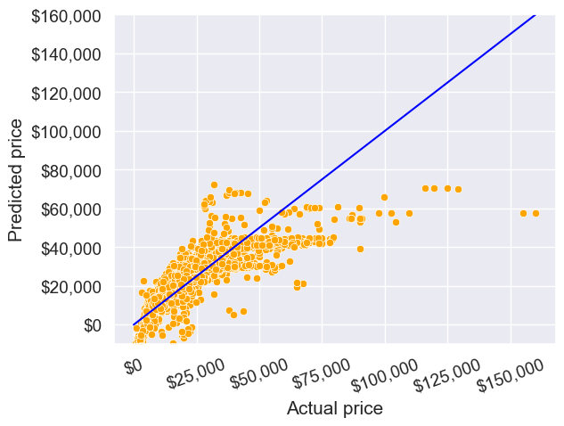
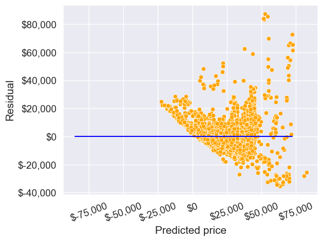

# importing libraries
import pandas as pd
import numpy as np
import statsmodels.formula.api as smf
import seaborn as sns
import matplotlib.pyplot as plt
from sklearn.linear_model import LinearRegression2 Multiple Linear Regression
Read section 3.2 of the book before using these notes.
Note that in this course, lecture notes are not sufficient, you must read the book for better understanding. Lecture notes are just implementing the concepts of the book on a dataset, but not explaining the concepts elaborately.
2.1 Multiple Linear Regression
Develop a multiple linear regression model that predicts car price based on engine size, year, mileage, and mpg. Datasets to be used: Car_features_train.csv, Car_prices_train.csv
# Reading datasets
trainf = pd.read_csv('./Datasets/Car_features_train.csv')
trainp = pd.read_csv('./Datasets/Car_prices_train.csv')
train = pd.merge(trainf,trainp)
train.head()| carID | brand | model | year | transmission | mileage | fuelType | tax | mpg | engineSize | price | |
|---|---|---|---|---|---|---|---|---|---|---|---|
| 0 | 18473 | bmw | 6 Series | 2020 | Semi-Auto | 11 | Diesel | 145 | 53.3282 | 3.0 | 37980 |
| 1 | 15064 | bmw | 6 Series | 2019 | Semi-Auto | 10813 | Diesel | 145 | 53.0430 | 3.0 | 33980 |
| 2 | 18268 | bmw | 6 Series | 2020 | Semi-Auto | 6 | Diesel | 145 | 53.4379 | 3.0 | 36850 |
| 3 | 18480 | bmw | 6 Series | 2017 | Semi-Auto | 18895 | Diesel | 145 | 51.5140 | 3.0 | 25998 |
| 4 | 18492 | bmw | 6 Series | 2015 | Automatic | 62953 | Diesel | 160 | 51.4903 | 3.0 | 18990 |
2.1.1 Training the model
#Using the ols function to create an ols object. 'ols' stands for 'Ordinary least squares'
ols_object = smf.ols(formula = 'price~year+mileage+mpg+engineSize', data = train)
model = ols_object.fit()
model.summary()| Dep. Variable: | price | R-squared: | 0.660 |
| Model: | OLS | Adj. R-squared: | 0.660 |
| Method: | Least Squares | F-statistic: | 2410. |
| Date: | Mon, 29 Jan 2024 | Prob (F-statistic): | 0.00 |
| Time: | 03:10:20 | Log-Likelihood: | -52497. |
| No. Observations: | 4960 | AIC: | 1.050e+05 |
| Df Residuals: | 4955 | BIC: | 1.050e+05 |
| Df Model: | 4 | ||
| Covariance Type: | nonrobust |
| coef | std err | t | P>|t| | [0.025 | 0.975] | |
| Intercept | -3.661e+06 | 1.49e+05 | -24.593 | 0.000 | -3.95e+06 | -3.37e+06 |
| year | 1817.7366 | 73.751 | 24.647 | 0.000 | 1673.151 | 1962.322 |
| mileage | -0.1474 | 0.009 | -16.817 | 0.000 | -0.165 | -0.130 |
| mpg | -79.3126 | 9.338 | -8.493 | 0.000 | -97.620 | -61.006 |
| engineSize | 1.218e+04 | 189.969 | 64.107 | 0.000 | 1.18e+04 | 1.26e+04 |
| Omnibus: | 2450.973 | Durbin-Watson: | 0.541 |
| Prob(Omnibus): | 0.000 | Jarque-Bera (JB): | 31060.548 |
| Skew: | 2.045 | Prob(JB): | 0.00 |
| Kurtosis: | 14.557 | Cond. No. | 3.83e+07 |
Notes:
[1] Standard Errors assume that the covariance matrix of the errors is correctly specified.
[2] The condition number is large, 3.83e+07. This might indicate that there are
strong multicollinearity or other numerical problems.
The model equation is: estimated car price = -3.661e6 + 1818 * year -0.15 * mileage - 79.31 * mpg + 12180 * engineSize
The procedure to fit the model using sklearn will be similar to that in simple linear regression.
model = LinearRegression()
X_train = train[['year','engineSize','mpg','mileage']] # Slice out the predictors
y_train = train[['price']]
model.fit(X_train,y_train)2.1.2 Hypothesis test for a relationship between the response and a subset of predictors
Let us test the hypothesis if there is relationship between car price and the set of predictors: mpg and year.
hypothesis = '(mpg = 0, year = 0)'
model.f_test(hypothesis) # the F test of these two predictors is stat. sig.<class 'statsmodels.stats.contrast.ContrastResults'>
<F test: F=325.9206432972666, p=1.0499509223096256e-133, df_denom=4.96e+03, df_num=2>As the \(p\)-value is low, we reject the null hypothesis, i.e., at least one of the predictors among mpg and year has a statistically significant relationship with car price.
Predict the car price for the cars in the test dataset. Datasets to be used: Car_features_test.csv, Car_prices_test.csv
testf = pd.read_csv('./Datasets/Car_features_test.csv')
testp = pd.read_csv('./Datasets/Car_prices_test.csv')2.1.3 Prediction
pred_price = model.predict(testf)Make a visualization that compares the predicted car prices with the actual car prices
sns.set(font_scale=1.25)
sns.scatterplot(x = testp.price, y = pred_price, color = 'orange')
#In case of a perfect prediction, all the points must lie on the line x = y.
ax = sns.lineplot(x = [0,testp.price.max()], y = [0,testp.price.max()],color='blue') #Plotting the line x = y.
plt.xlabel('Actual price')
plt.ylabel('Predicted price')
plt.ylim([-10000, 160000])
ax.yaxis.set_major_formatter('${x:,.0f}')
ax.xaxis.set_major_formatter('${x:,.0f}')
plt.xticks(rotation=20);
The prediction looks better as compared to the one with simple linear regression. This is because we have four predictors to help explain the variation in car price, instead of just one in the case of simple linear regression. Also, all the predictors have a significant relationship with price as evident from their p-values. Thus, all four of them are contributing in explaining the variation. Note the higher values of \(R^2\) as compared to the one in the case of simple linear regression.
What is the RMSE of the predicted car price?
np.sqrt(((testp.price - pred_price)**2).mean())9956.82497993548What is the residual standard error based on the training data?
np.sqrt(model.mse_resid)9563.74782917604trainp.describe()| carID | price | |
|---|---|---|
| count | 4960.000000 | 4960.000000 |
| mean | 15832.446169 | 23469.943750 |
| std | 2206.717006 | 16406.714563 |
| min | 12002.000000 | 450.000000 |
| 25% | 13929.250000 | 12000.000000 |
| 50% | 15840.000000 | 18999.000000 |
| 75% | 17765.750000 | 30335.750000 |
| max | 19629.000000 | 145000.000000 |
sns.scatterplot(x = model.fittedvalues, y=model.resid,color = 'orange')
ax = sns.lineplot(x = [pred_price.min(),pred_price.max()],y = [0,0],color = 'blue')
plt.xlabel('Predicted price')
plt.ylabel('Residual')
ax.yaxis.set_major_formatter('${x:,.0f}')
ax.xaxis.set_major_formatter('${x:,.0f}')
plt.xticks(rotation=20);
2.1.4 Effect of adding noisy predictors on \(R^2\)
Will the explained variation (R-squared) in car price always increase if we add a variable?
Should we keep on adding variables as long as the explained variation (R-squared) is increasing?
#Using the ols function to create an ols object. 'ols' stands for 'Ordinary least squares'
np.random.seed(1)
train['rand_col'] = np.random.rand(train.shape[0])
ols_object = smf.ols(formula = 'price~year+mileage+mpg+engineSize+rand_col', data = train)
model = ols_object.fit()
model.summary()| Dep. Variable: | price | R-squared: | 0.661 |
| Model: | OLS | Adj. R-squared: | 0.660 |
| Method: | Least Squares | F-statistic: | 1928. |
| Date: | Tue, 27 Dec 2022 | Prob (F-statistic): | 0.00 |
| Time: | 01:07:38 | Log-Likelihood: | -52497. |
| No. Observations: | 4960 | AIC: | 1.050e+05 |
| Df Residuals: | 4954 | BIC: | 1.050e+05 |
| Df Model: | 5 | ||
| Covariance Type: | nonrobust |
| coef | std err | t | P>|t| | [0.025 | 0.975] | |
| Intercept | -3.662e+06 | 1.49e+05 | -24.600 | 0.000 | -3.95e+06 | -3.37e+06 |
| year | 1818.1672 | 73.753 | 24.652 | 0.000 | 1673.578 | 1962.756 |
| mileage | -0.1474 | 0.009 | -16.809 | 0.000 | -0.165 | -0.130 |
| mpg | -79.2837 | 9.338 | -8.490 | 0.000 | -97.591 | -60.976 |
| engineSize | 1.218e+04 | 189.972 | 64.109 | 0.000 | 1.18e+04 | 1.26e+04 |
| rand_col | 451.1226 | 471.897 | 0.956 | 0.339 | -474.004 | 1376.249 |
| Omnibus: | 2451.728 | Durbin-Watson: | 0.541 |
| Prob(Omnibus): | 0.000 | Jarque-Bera (JB): | 31040.331 |
| Skew: | 2.046 | Prob(JB): | 0.00 |
| Kurtosis: | 14.552 | Cond. No. | 3.83e+07 |
Notes:
[1] Standard Errors assume that the covariance matrix of the errors is correctly specified.
[2] The condition number is large, 3.83e+07. This might indicate that there are
strong multicollinearity or other numerical problems.
Adding a variable with random values to the model (rand_col) increased the explained variation (\(R^2\)). This is because the model has one more parameter to tune to reduce the residual squared error \((RSS)\). However, the \(p\)-value of rand_col suggests that its coefficient is zero. Thus, using the model with rand_col may give poorer performance on unknown data, as compared to the model without rand_col. This implies that it is not a good idea to blindly add variables in the model to increase \(R^2\).